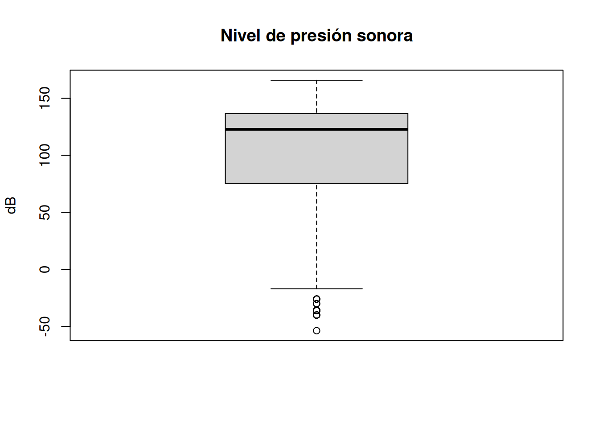
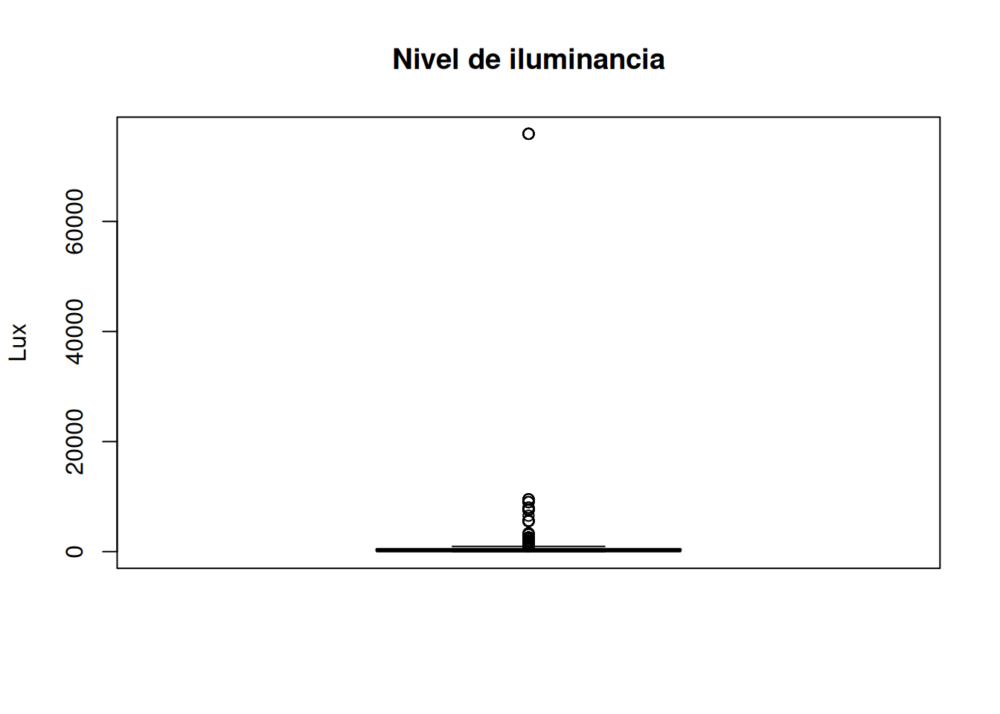

library(readr)
library(dplyr)
library(ggplot2)Avance3
Librerías
Carga de la base de datos
#Encuentas <- read_csv("CAUTECResBien_1.csv")
#Ambientales<- read_csv("CAUTECResBien1_1.csv")
Encuentas <- read_csv("EncuestasB.csv")
Ambientales <- read_csv("MedicionesB.csv")Unión de bases de datos
resultado <- inner_join(Encuentas, Ambientales , by = "ID")Warning in inner_join(Encuentas, Ambientales, by = "ID"): Detected an unexpected many-to-many relationship between `x` and `y`.
ℹ Row 30 of `x` matches multiple rows in `y`.
ℹ Row 63 of `y` matches multiple rows in `x`.
ℹ If a many-to-many relationship is expected, set `relationship =
"many-to-many"` to silence this warning.Resultados
cat("Filas en Encuestas:", nrow(Encuentas), "\n")Filas en Encuestas: 1318 cat("Filas en Ambientales:", nrow(Ambientales), "\n")Filas en Ambientales: 242 cat("Filas después del join:", nrow(resultado), "\n")Filas después del join: 1404 #names(resultado)
resultado <- resultado %>% select(
-`Marca temporal.x`,
-`Marca temporal.y`,
-`¿En qué horario está llenando el formulario?.x`,
-`¿En qué horario está llenando el formulario?.y`,
- Piso.x,
- Ambiente.x,
-`¿Qué grupo lo/la está encuestando?`,
-`¿En qué torre se encuentra?.x`,
-...22,
-...21
)Renombramiento y Selección
resultado <- resultado %>% rename(
'Torre' = `¿En qué torre se encuentra?.y`,
'Piso' = Piso.y,
'Ambiente' = Ambiente.y ,
'Distractores' =`Tipo de distractores no relacionados con su propósito`,
'Cant de luminarias'= `Cantidad de luminarias (focos) funcionando`,
'Facilidad para estudiar' = `Nivel de facilidad para estudiar en el ambiente`,
'Propósito' = `Propósito en la comunidad`,
'Fuente de ruido' = `Fuente principal de ruido`
)resultado <- resultado %>% select(
ID, Grupo, Torre, Ambiente, `Nivel de presión sonora (dB)`, `Nivel de iluminancia`, `Temperatura ambiental`, `N° de personas presentes`, `N° de tomacorrientes disponibles`, `Cant de luminarias`, `Fuente de luz` , `Fuente de ruido`,Propósito, Distractores, `Frecuencia de uso del ambiente` , `Nivel de conservación`,`Nivel de comodidad`, `Facilidad para estudiar`, `Intensidad de la luz`
)Limpieza
resultado <- resultado %>% mutate(`Cant de luminarias` = case_when(
`Cant de luminarias` == 'Todos' ~ NA,
TRUE ~ `Cant de luminarias`
)) %>% mutate(`Cant de luminarias` = strtoi(`Cant de luminarias`))sum(is.na(resultado))[1] 23nrow(resultado)[1] 1404resultado <- na.omit(resultado)
nrow(resultado)[1] 1381### Cuantitativas Discretas
resultado<- resultado %>% mutate(
`N° de tomacorrientes disponibles` = as.numeric(`N° de tomacorrientes disponibles`),
`N° de personas presentes` = as.numeric(`N° de personas presentes`)
)
#### Cuantitativas Continuas
resultado<- resultado %>%
mutate(
`Nivel de presión sonora (dB)` =
round(as.numeric(`Nivel de presión sonora (dB)`), 2),
`Nivel de iluminancia` =
round(as.numeric(`Nivel de iluminancia`), 2)
)Warning: There was 1 warning in `mutate()`.
ℹ In argument: `Nivel de presión sonora (dB) = round(as.numeric(`Nivel de
presión sonora (dB)`), 2)`.
Caused by warning:
! NAs introducidos por coerción#### Factores Ordinales
resultado <- resultado %>%
mutate(
# Variables con escala del 1 al 5
`Nivel de conservación` = factor(`Nivel de conservación`, levels = c(1:5), ordered = TRUE),
`Nivel de comodidad` = factor(`Nivel de comodidad`, levels = c(1:5), ordered = TRUE),
`Facilidad para estudiar` = factor(`Facilidad para estudiar`, levels = c(1:5), ordered = TRUE),
# Variables con escala del 1 al 3
`Intensidad de la luz` = factor(`Intensidad de la luz`, levels = c(1:3), ordered = TRUE),
`Frecuencia de uso del ambiente` = factor(`Frecuencia de uso del ambiente`, levels = c(1:3), ordered = TRUE)
)
#### Factores Nominales
resultado <- resultado%>% mutate(
Propósito = as.factor(Propósito),
`Fuente de luz` = as.factor(`Fuente de luz`),
`Fuente de ruido` = as.factor(`Fuente de ruido`),
Distractores = as.factor(Distractores),
Ambiente = as.factor(Ambiente)
)str(resultado)tibble [1,381 × 19] (S3: tbl_df/tbl/data.frame)
$ ID : chr [1:1381] "9A3-2904-13" "9A3-3004-13" "3A1-3004-13" "3A1-3004-13" ...
$ Grupo : chr [1:1381] "Grupo 1" "Grupo 1" "Grupo 1" "Grupo 1" ...
$ Torre : chr [1:1381] "A" "A" "A" "A" ...
$ Ambiente : Factor w/ 5 levels "1","2","3","4",..: 3 3 1 1 1 2 3 4 3 3 ...
$ Nivel de presión sonora (dB) : num [1:1381] -53.7 131.3 145.2 145.2 145.2 ...
$ Nivel de iluminancia : num [1:1381] 11.9 435.2 347.1 347.1 347.1 ...
$ Temperatura ambiental : num [1:1381] 26 22 21 21 21 22 22 21 22 22 ...
$ N° de personas presentes : num [1:1381] 12 5 1 1 1 3 5 4 5 5 ...
$ N° de tomacorrientes disponibles: num [1:1381] 6 10 2 2 2 2 10 1 10 10 ...
$ Cant de luminarias : int [1:1381] 5 5 0 0 0 0 5 0 5 5 ...
$ Fuente de luz : Factor w/ 3 levels "Artificial","Mixta",..: 2 2 3 3 3 3 2 3 2 2 ...
$ Fuente de ruido : Factor w/ 4 levels "Charla de estudiantes",..: 1 1 4 4 4 4 1 4 1 1 ...
$ Propósito : Factor w/ 6 levels "Alimentación",..: 4 4 6 6 6 6 4 6 4 4 ...
$ Distractores : Factor w/ 4 levels "Auditivos","Olfativos",..: 3 3 1 1 1 1 3 1 3 3 ...
$ Frecuencia de uso del ambiente : Ord.factor w/ 3 levels "1"<"2"<"3": 2 2 3 2 1 1 3 1 2 1 ...
$ Nivel de conservación : Ord.factor w/ 5 levels "1"<"2"<"3"<"4"<..: 4 1 4 4 4 3 4 4 4 5 ...
$ Nivel de comodidad : Ord.factor w/ 5 levels "1"<"2"<"3"<"4"<..: 3 4 4 3 3 2 3 2 3 4 ...
$ Facilidad para estudiar : Ord.factor w/ 5 levels "1"<"2"<"3"<"4"<..: 4 4 4 2 1 3 4 2 3 3 ...
$ Intensidad de la luz : Ord.factor w/ 3 levels "1"<"2"<"3": 2 2 1 2 2 2 2 2 2 2 ...
- attr(*, "na.action")= 'omit' Named int [1:23] 14 16 23 32 36 40 44 50 54 58 ...
..- attr(*, "names")= chr [1:23] "14" "16" "23" "32" ...1. Análisis Univariable
Nivel de presión sonora (dB) :
Media : 105.01 dbMediana : 122.8 dbMínimo : -53.7 dbMáximo : 165.89 dbDesviación estándar : 45.3 dbRango intercuartílico : 61.64 dbCoeficiente de variación : 43.14 %
Nivel de Iluminancia :
Media : 884.75 luxMediana : 261.76 luxMínimo : 0 luxMáximo : 75910.2 luxDesviación estándar : 5108.24 luxRango intercuartílico : 333.43 luxCoeficiente de variación : 577.37 %